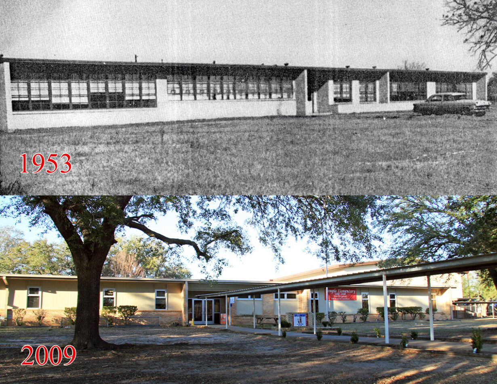
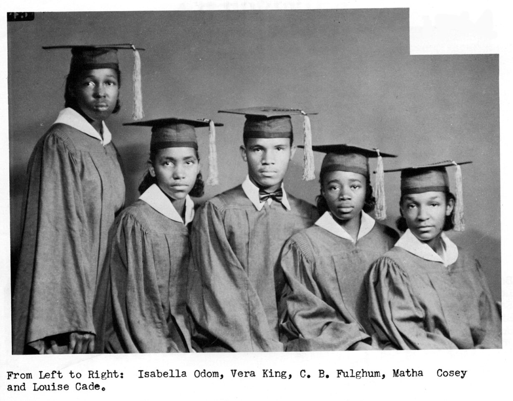
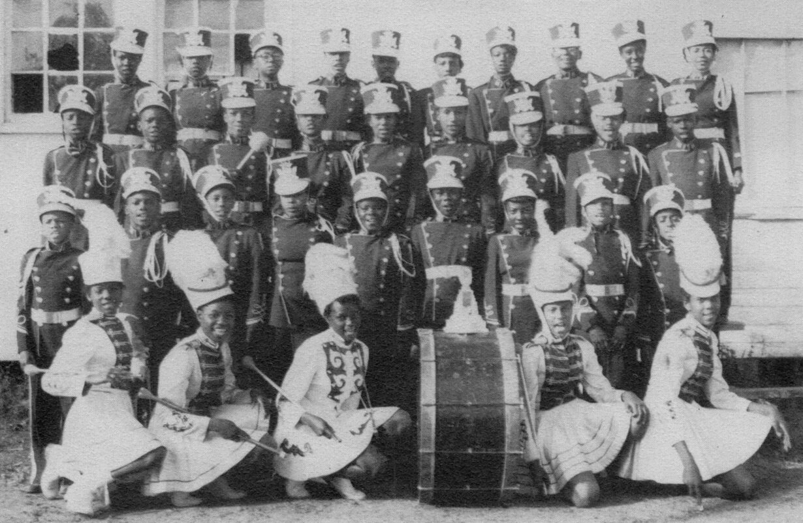

Long Chapel C.M.E.
Organized by Father Mims on the Square Long property.
Sources: Bob Bowman, ed., Land of the Little Angel: A History of Angelina County, Texas (Lufkin: Lufkin Printing Co., 1976), p. 71.Black families built this county: its mills, its farms, its churches and schools, and some of the finest athletes Texas ever produced. Here are their stories, told plainly, from the records and from the community’s own memory.
Before 1865
Slavery was part of Angelina County from the start. The 1847 state census counted 154 enslaved people among the county’s 834 residents. By 1850 the number was 196, and by 1860 it was 686.
On James Ewing’s plantation on the Angelina River, a few miles northeast of Ora near present-day Huntington, enslaved people ran a gristmill, a cotton gin, a cane mill, a blacksmith shop and a brick kiln, and drove cattle and hogs all the way to Natchitoches, Louisiana. At the county’s water-powered mill on Mill Creek, built in 1853, the county history names one of the men who worked it: Berry Roberts, who was enslaved. In 1936 he was said to be still living near the old mill site, over 90 years old.
The records that treated people as property are also, now, a way to find them. When Abram and Peggy Moore were killed in 1856, the probate inventory of their estate listed 33 enslaved people. Records like these can help descendants trace their families, and the county’s probate files survive with the Angelina County Clerk.
The county’s first industry ran on water power and enslaved labor. Read the Mill Creek story and Our water has a paper trail.
Freedom came late to Texas
George Hackney was born into slavery in Tennessee in 1833. As a young man he and his brothers and sisters were sold at the New Orleans slave market, and James Ewing bought him and brought him to the Angelina River. He worked the Ewing plantation as a blacksmith and a teamster, hauling cotton by ox team to Alto.
The news of freedom reached them on June 19, 1865, the day Texans now celebrate as Juneteenth. According to the county history, Ewing told Hackney he could go, and threatened to kill him if he stopped within a hundred miles.
He left with what he owned in a flour sack. He settled in Lufkin anyway, bought land and town lots, ran a boarding house, and met the night trains to see travelers safely to their beds. The county history notes he was one of the few Black men who could be seen in town after dark. His son Joe bought 50 acres at Homer. His grandson Hugh went to Texas College.
He was told to go and keep going. He stayed, bought land, and spent his nights making sure strangers got home safe.
Sources: Bob Bowman, ed., Land of the Little Angel: A History of Angelina County, Texas (Lufkin: Lufkin Printing Co., 1976), pp. 51, 199–200, 274–275.Land that stayed in the family
After the war, Squire Long, a freedman known to everyone as Uncle Square, bought a homestead next to a white neighbor’s farm. In 1974 his descendants still owned it. He was a Freemason and built and kept up chapels that served Black families as both church and school.
In 1892 Long Chapel C.M.E. Church was organized on the old Square Long property. Its founders were Square Long, Will Roberts, Jacob Roberts, John Burton and Mahalia Long. Members put up a church building in 1908, and the present one in 1948. It’s an early Black congregation, still part of the county’s story.
Sources: Bob Bowman, ed., Land of the Little Angel: A History of Angelina County, Texas (Lufkin: Lufkin Printing Co., 1976), pp. 71, 291–292.Faith
Organized by Father Mims on the Square Long property.
Sources: Bob Bowman, ed., Land of the Little Angel: A History of Angelina County, Texas (Lufkin: Lufkin Printing Co., 1976), p. 71.Began under a brush arbor in the Lufkin Land mill community.
Sources: Bob Bowman, ed., Land of the Little Angel: A History of Angelina County, Texas (Lufkin: Lufkin Printing Co., 1976), p. 75.Education
Lufkin’s first Black school stood on Chestnut Street near Paul Avenue and later moved to Leach Street. Keltys had its own school west of the railroad tracks. Over the years came Carver, Brandon and Dunbar, the heart of Black Lufkin for decades.
Built on Lake Street. W. H. Brandon was its principal in 1939. Brandon School followed in 1946. Dunbar was merged into Lufkin High at integration.
Sources: Bob Bowman, ed., Land of the Little Angel: A History of Angelina County, Texas (Lufkin: Lufkin Printing Co., 1976), pp. 49, 200, 202, 245.Carver School, built in 1939–40, was renamed for Olivia Ray Hackney, who had taught at Dunbar since 1931.
Sources: Bob Bowman, ed., Land of the Little Angel: A History of Angelina County, Texas (Lufkin: Lufkin Printing Co., 1976), pp. 50–51, 200.The Keltys school was renamed for its principal, Mabel Melear. The old Leach Street school became Melinda Garrett Elementary.
Sources: Bob Bowman, ed., Land of the Little Angel: A History of Angelina County, Texas (Lufkin: Lufkin Printing Co., 1976), p. 49.Diboll integrated its schools by 1968, ahead of most of the region. Lufkin completed integration of every campus between 1969 and 1974. In Huntington, a separate school for Black students was still being built in 1961.
Sources: Bob Bowman, ed., Land of the Little Angel: A History of Angelina County, Texas (Lufkin: Lufkin Printing Co., 1976), pp. 51, 55, 57, 161.


1953–1969
For about 16 years, Lufkin’s Dunbar High School was one of the great athletic programs in Texas. Under coach Elmer Redd the Dunbar Tigers won three state football championships, going 143–35. Dunbar also won three state track titles and six state tennis titles.
Curtis Mills, a Lufkin native, set the world record in the 440-yard dash, 44.7 seconds, at Texas A&M in 1969. Dunbar’s Phillip Jones played national tennis, including against Arthur Ashe. Ken Houston went from Dunbar to the Houston Oilers and Washington and into the Pro Football Hall of Fame.
When Dunbar was merged into Lufkin High, the county history gave the whole era one paragraph. It deserves a lot more than that, and we’d like to help tell it.
Building up
In 1955 a Dunbar civics class surveyed Black-owned businesses in Lufkin and counted 4 barber shops, 17 beauty shops, 2 mortuaries, 10 cafés, 5 construction firms, 8 groceries, 3 garages, 3 hotels, 2 taxi companies, 3 service stations, a newsstand, a blacksmith and 2 washaterias.
Founded by Dunbar principal F. W. Thomas. It bought band instruments for Dunbar, improved Jones Lake Park, opened a day care center for working mothers (the idea of E. E. Cleaver) and pushed for new housing near old Dunbar. It published a paper, The Mirror.
Sources: Bob Bowman, ed., Land of the Little Angel: A History of Angelina County, Texas (Lufkin: Lufkin Printing Co., 1976), pp. 199–200, 320–322.The Progressive Garden Club (1936, Mrs. Hugh Hackney), the Community Aid Club (1941, Walter Ford of Keltys; 147 members by 1976), the Delphian Civic, Social and Study Club (1956; college scholarships) and the C. Mark Social and Charity Club (1967).
Sources: Bob Bowman, ed., Land of the Little Angel: A History of Angelina County, Texas (Lufkin: Lufkin Printing Co., 1976), pp. 199–200.In 1969 Olivia and Hugh Hackney became the first Black couple named the Lufkin Booster Club’s “Boosters of the Month.”
Sources: Bob Bowman, ed., Land of the Little Angel: A History of Angelina County, Texas (Lufkin: Lufkin Printing Co., 1976), p. 200.A remarkable life
William James Jackson died in Diboll on Nov. 19, 1972, just short of his 103rd birthday. According to the county history he was born in Milwaukee in the 1870s, grew up traveling with a medicine show, and spent 60 years in minstrel and circus bands. The book says he taught a young Harry James to play the trumpet and toured with W. C. Handy, playing in the band that introduced the “Memphis Blues” and the “St. Louis Blues.” He came to Diboll in the 1920s and worked 20 years as a porter and mail clerk on the Texas South-Eastern Railroad.
Sources: Bob Bowman, ed., Land of the Little Angel: A History of Angelina County, Texas (Lufkin: Lufkin Printing Co., 1976), pp. 198–199.Most of this page comes from Land of the Little Angel, a 1976 county history written mostly by descendants of white settlers. It holds names and dates we couldn’t find anywhere else, but it tells these stories from the outside, and some of its language is out of date. We’ve retold them in our own words.
If your family’s story belongs here, or if we got something wrong, write contact@grailsystems.io. We’ll ask before we post anything, and we’ll credit your family.